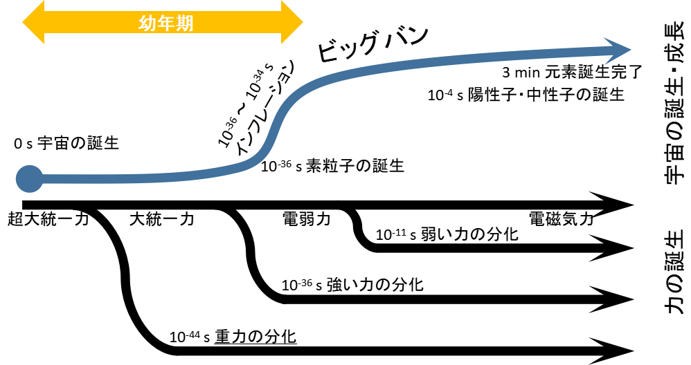

ピコピコプラネッツ[1]とは、ミリオン星人であるひなた、星梨花、環、杏奈の4名が地球人であるやよいと出会い、宇宙の様々な場所を旅して交流を深める物語である。
この物語では様々な宇宙や物理に関する用語が用いられている。なかでも特徴的な用語は「幼年期」と「友情エネルギー」であろう。本報告ではこれらのキーワードが意味するところを明らかにし、そこから推定されるミリオン星人の生態について述べる。
ピコピコプラネッツの物語では、まず宇宙の誕生について語られている。その中で「幼年期」というキーワードが登場する。これは言うまでもなくクラーク「幼年期の終わり」[2]からの引用である。しかし「幼年期の終わり」とピコピコプラネッツでは「幼年期」の意味が異なっているようである(表 1)。
| 作品 | 作品内での「幼年期」の意味 |
|---|---|
| 幼年期の終わり | 文明が未成熟な状態およびその時期。現在の人類が生きている時代を指す。 |
| ピコピコプラネッツ |
宇宙がまだ幼年期だったころは、星と星はみんななかよしでいつも一緒であった。 星たちは友情エネルギーによって重力を生み出しお互いにひかれあっていた。 星々は大人になり離れていったのがビッグバンである。 |
ピコピコプラネッツで「幼年期」とされている時期を、現代物理学の知見とともに図示したものが図 1である。

この図を見てもわかるように、宇宙が誕生してから10-34sという非常に短い時間帯のことをピコピコプラネッツでは「幼年期」と呼んでいる。前述のとおりクラークの「幼年期」は現代を指す用語であり、ピコピコプラネッツの用法はクラークの用法とは明らかに異なっている。
次に「友情エネルギー」について述べる。
「友情エネルギー」は次のような特徴を有している。
このよう説明されているものの、「友情エネルギー」がどのようなエネルギーであるのか定かではない。なおエネルギーと力が混同されているようにも見えるが、ここでは見なかったことにする。
以上のように、「幼年期」「友情エネルギー」は現代地球の知見とはズレがあることは明らかである。このズレについて検討した結果、いくつかの仮説が示唆された。仮説とその根拠について以下に述べる。
先に説明したように、ミリオン星人は「幼年期」という言葉を、クラークの「幼年期の終わり」とは明らかに違った意味で使っている。「幼年期の終わり」では文明を有する生命種を対象にした用語である。一方で「ピコピコプラネッツ」では宇宙誕生直後の時期を指しているが、この時期に文明を有する生命種は存在しえない。この期間には元素すら存在しておらず、素粒子がようやく誕生したばかりである。
なぜミリオン星人は生命や文明が誕生していない時期のことを「幼年期」と呼んでいるのであろうか？
その理由は、ミリオン星人はエネルギーそのものや素粒子レベルのものに対しても文明の痕跡をみているためではないかと推察される。ミリオン星人にとって、エネルギー、素粒子、原子、無機物、有機物、生命体など多少の差はあれど、どれも大して変わらないものと見なしているのであろう。
つまりミリオン星人は、エネルギー、素粒子、原子、無機物、有機物、生命体の段階からさらに先に進んだ存在であることが推定される。ではそれがどのような存在であるのか確かなところを明らかにするのは難しいが、ここでは物理的な身体を持たず情報で構成された生命体であると仮定し、仮説をサポートする間接的な証拠を整理した。
ミリオン星人は「せんのー」を「一緒に歌ったり踊ったりすること」、「せーふく」を「お友達になること」であると述べている(表 2)。これは現代日本人の認識とは大きな齟齬がある。日本人であれば「洗脳」「征服」というと生命の危険も感じる言葉であるが、ミリオン星人には全くそのような雰囲気は見られない。ミリオン星人は生命や身体に対する危険意識が欠けているように思える。
| 語句 | ミリオン星人用語 | 地球語[4] |
|---|---|---|
| せんのー | 一緒に歌ったり踊ったりすること | 共産主義社会における思想改造 |
| せーふく | お友達になること | 武力で敵を負かし、支配下におくこと |
他にも、スペースこぶん号が不時着する際(そうぐう！ちきゅうのおともだち 3:10～)には、「お腹がすいたら動けない」と言っているが、「死にそう」といった言葉は使っていない。食料がなくなっても死ぬことはないと考えているようである。
以上のような言動を考えると、ミリオン星人は生命に関する意識が非常に希薄であることがわかる。ミリオン星人は生命体の段階から先に進んだ存在であることと合わせて考えると、ミリオン星人は死を超越した死なない存在に進化したのではないかと推察される。
もちろん、ミリオン星人は医療が高度に発達して実質的に死ぬことがなくなった高度な文明を有しており、「死」が身近でなくなっただけであるという可能性もある。しかしその場合であっても「死」の意識から逃れることは難しい。自分の死も他人の死も意識しなくなったということは、「死」という概念そのものが消失したのであろう。
以上により、ミリオン星人は死ぬことがなくなった存在であると推定した。
ところで、環らミリオン星人が無機物と有機生命体をほとんど区別していないとするなら、環らは石ころでも見るような目で私たち地球人を見ていることになる。もちろん、地球人も石や鉱物を愛でるし、無機物にX線を照射して回折パターンを楽しむこともある。イベントコミュ第3話で環が虫を愛でるシーンが描かれているのはその構図を示したものであろう。地球人の環が虫を愛でるように、ミリオン星人の環は地球人を愛でるのである。
ミリオン星人は前述のよう生命に関する意識が希薄である一方、情報やコミュニケーションに対しては強い欲求を有しているようだ。以下に事例を示す。
「死なない」特性と合わせて考えると、ミリオン星人は負の情報エントロピー[5]を消費して活動する情報生命体ではないかと考えられる。
以上の特性から考えると、情報生命体であるひなたらはスペースこぶん号にインストールされた状態であり、地球人であるやよいとコミュニケーションしている仮のボディを外部からコントロールしている(図 2)のではないかと推測される。
イベントコミュ第4話では雪歩に同様の現象が発生しており、宇宙ではよくある技術なのだろう。
前述のとおり、宇宙の誕生からビッグバンまでの間(幼年期)に、友情エネルギーは重力を生み出した。現代の物理学では、宇宙の誕生からビッグバンまでの間に、統一された力から重力が分化したと考えられている(図 1)。重力の発生時期に関して、ミリオン星人の知識と現代物理学の知識は一致している。とすると、「友情エネルギー」は誕生直後の宇宙が持つエネルギーのことであると解釈できる。
不確定性原理に基づけば、真空の揺らぎによって無から宇宙が誕生する[3]。そして誕生した宇宙は「真空エネルギー」を有しており、相転移により生じた熱でビッグバンが起こる[6]。つまり、誕生直後の宇宙が持つエネルギーは「真空エネルギー」であり、すなわち、友情エネルギーとは真空エネルギーのことであると判断できる。
ひなたらは惑星シマーバラにて歌とダンスで友情エネルギー(真空エネルギー)を発生させることに成功した。原理は不明であるが、歌とダンスを行うことで強制的に宇宙を誕生させ、誕生直後の宇宙から真空エネルギーを取り出したものと考えられる。ただし物語では誕生した宇宙が成長した様子は記述されていないため、真空エネルギーを取り出した誕生直後の宇宙は再度「無」に戻されたと思われる。なお友情エネルギーは「物理法則を超える力を生み出せる」と評されているが、これは歌とダンスが作用する機構が未解明であることを指しているのであろう。
以上により、友情エネルギーとは真空エネルギーのことであり、ミリオン星人は歌とダンスで宇宙を強制的に誕生させ真空エネルギーを取り出す技術を有していると推定された。
ピコピコプラネッツに登場する「幼年期」「友情エネルギー」を精査することによって、ミリオン星人は情報生命体であること、強制的に宇宙を誕生させる技術を有することが示された。地球人にとってははるか上位の存在であると言えるが、「幼年期の終わり」に登場するオーバーロード・オーバーマインド[2]と異なり、地球人への態度は非常に友好的である。このような存在であれば「せーふく」のみならず「征服」されることも大歓迎である。近い将来にスペースこぶん号が東京の真上に静止することを期待する。
なお解明が十分でない事項として、友情エネルギーの距離依存性の問題が挙げられる。友情エネルギーは、離れていても友情が変わらない特性を有していることから、友情エネルギーの伝播は距離に依存しないと考えられる。つまり、友情エネルギー(力)は余剰次元を伝播していることが示唆されるが、これはまた別途報告することとしない。
[1] BANDAI NAMCO Entertainment Inc., THE IDOLM@STER MILLION THE@TER GENERATION 16 ピコピコプラネッツ, 2019
[2] アーサー・C・クラーク、「幼年期の終わり」、1952
[3] 谷口 義明、宇宙進化論、土木学会論文集 3（応用力学）, Vol. 67, No. 2（応用力学論文集 Vol. 14）, I_3-I_12, 2011
[4] goo辞書
[5] PHILIP BALL, いかに生命は「無秩序」な状態から生まれ、進化するのか？, WIRED, 2017
[6] 佐藤勝彦、宇宙が急速に膨張したのは真空にもエネルギーがあったから